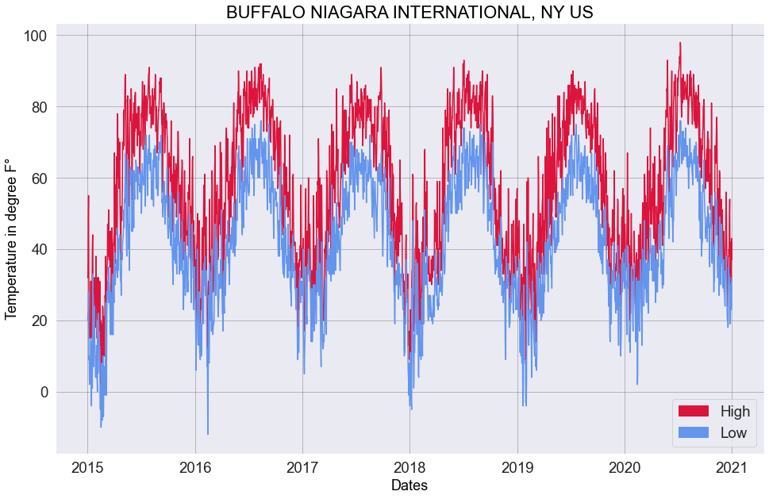

Systems.
With imagination.
I’m Alex. I build data platforms, AI applications, and experiences that make complex things feel a little more human.
Good ideas happen
between disciplines.
CURRENTLY Data & AI engineering at OnTrac
SCROLL TO CONNECT THE DOTSA serious curiosity.
A playful approach.
Production systems, published research, and experiments that began with “what if?”
A browser, beyond its borders.
A rotating cube with shared position and animation across browser windows. A small experiment in making the browser frame part of the experience.
Consensus in a changing network.
Co-authored research on distributed average consensus in anonymous dynamic networks, with Dariusz R. Kowalski and Miguel A. Mosteiro.
Reading the weather, through data.
Exploratory analysis of temperature and precipitation at five New York weather stations, followed by experiments in forecasting and time-series modeling.
A closer look: the actual analysis

An original output from the weather exploration notebook. Station-level observations over a short period; this chart alone does not establish a long-term climate trend. Related work: forecasting models and sunspot time series.
SlashDB React tooling.
Contributed a JavaScript wrapper and React hook prototype, followed by SDK organization and setup documentation. Part of SlashDB’s open-source projects.
When code becomes a sketchbook.
Visual experiments in Processing and JavaScript. Exploring what happens when simple rules meet color, motion, and a willingness to follow an unexpected result.
Different scales.
Same curiosity.
From the movement of a delivery network to the behavior of an anonymous node. I’m drawn to systems, and to making them work better for people.
Full professional backgroundSenior Software Engineer, Data
Data and AI engineering on Google Cloud. Building pipelines and integrations, improving observability, and connecting language models to useful organizational knowledge.
BigQuery · Airflow · Kafka · Cloud Run · Vertex AI
Lead Software Developer
Full-stack development across network digital twins, geospatial visualization, route optimization tools, and generative AI prototypes.
TypeScript · React · Python · deck.gl
Research, software, and leadership
MS in Computer Science. Research in distributed dynamic networks and experience leading a student development team at Seidenberg Creative Labs.
Distributed algorithms · Full-stack & mobile development
The side quests
are part of the story.
Worlds to play in.
Designing a browser-based spatial puzzle game, from its rules to its visual identity and the way it feels to play.
Tools to think with.
Building local AI tools for inspecting, editing, and verifying software, with control kept on the developer’s machine.
Learning by making.
Exploring interactive computer science education through simulation and play, alongside experiments in creative video tools.
About me.
I’m a software engineer focused on data platforms and AI applications. My background includes full-stack and mobile development, distributed-systems research, and logistics technology.
At OnTrac, I work on data pipelines, integrations, and LLM applications. Previously, I led software development in UPS’s Advanced Technology Group.
Outside work, I enjoy photography, music, and building personal software projects.
What are you
thinking about?
Data systems, AI applications, creative code, or an idea that doesn’t fit neatly into a box. Let’s talk.
Start a conversation